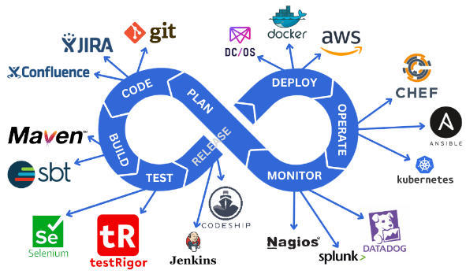

Гайд по CI/CD

CI/CD (Continuous Integration / Continuous Delivery / Continuous Deployment) — это практика автоматизации процессов разработки, тестирования и развертывания кода.
В контексте работы автотестировщика и разработчика CI/CD — это система, которая забирает ваш код из репозитория, прогоняет все тесты, собирает артефакты и выкатывает их на окружения (dev / stage / prod). Человек перестаёт быть «узким горлом» — всё делает машина.
Главная фишка CI/CD в том, что вы перестаёте бояться релизов. Коммит в main → автоматический запуск проверок → если всё зелено — код в продакшене.
Ключевые концепции
Чтобы понимать, как работают CI/CD-пайплайны, нужно разобраться с основными понятиями.
- CI (Continuous Integration) — непрерывная интеграция. Разработчики часто мержат код в общую ветку (несколько раз в день). При каждом мерже автоматически запускаются сборка и тесты. Цель — найти ошибки на ранней стадии.
- CD (Continuous Delivery) — непрерывная доставка. Код всегда готов к выкатке в продакшен. После успешного CI артефакт автоматически деплоится на stage-окружение, а релиз в прод происходит нажатием одной кнопки (или по расписанию).
- CD (Continuous Deployment) — непрерывное развертывание. Крайняя степень автоматизации: каждый успешный коммит в
mainавтоматически улетает в продакшен. Без кнопок, без ручного approval. - Pipeline (пайплайн) — последовательность автоматических шагов (джобов), которые выполняются при определённых событиях (push, pull request, merge). Это «сценарий» вашего CI/CD-процесса.
- Job (джоба) — отдельная единица работы внутри пайплайна. Например:
build,run_tests,deploy_to_stage,notify_team. Джобы могут выполняться последовательно или параллельно. - Stage (стадия) — логическая группировка джобов. Например, стадия
testможет содержать джобыunit_tests,integration_tests,e2e_tests. - Artifact (артефакт) — результат сборки, который передаётся дальше. Docker-образ,
.jar/.exe-файл, отчёты о тестах,node_modules. Артефакты передаются между джобами и стадиями. - Runner / Agent — исполнитель: машина (виртуальная, Docker-контейнер, физический сервер), на которой запускаются ваши джобы. GitHub Actions называет их
runners, GitLab —runners, Jenkins —agents, TeamCity —build agents.
Структура CI/CD-пайплайна
Типичный пайплайн выглядит как лесенка шагов:
[Push / PR в main]
│
▼
┌─────────────────┐
│ Стадия: Build │ ← Собрать код, установить зависимости
│ - install │ ← Сохранить артефакты
│ - compile │
└────────┬────────┘
│
▼
┌─────────────────┐
│ Стадия: Test │ ← Параллельные джобы
│ - unit_tests │
│ - lint │
│ - integration │
│ - e2e (smoke) │
└────────┬────────┘
│
▼ (если всё зелено)
┌─────────────────┐
│ Стадия: Build │ ← Собрать production-артефакт
│ Image │ ← Собрать Docker-образ
└────────┬────────┘
│
▼
┌─────────────────┐
│ Стадия: Deploy │ ← Выкатить на Stage
│ to Stage │ ← Запустить smoke-тесты
└────────┬────────┘
│
▼ (в Delivery — стоп, в Deployment — автоматом)
┌─────────────────┐
│ Стадия: Deploy │ ← Выкатить в Production
│ to Prod │
└─────────────────┘
Схема работы (Step-by-Step)
Процесс CI/CD на примере GitHub Actions:
- Разработчик пушит код в ветку
feature/loginи открывает Pull Request (PR) вmain. - CI-система автоматически запускает пайплайн:
- Поднимает свежий runner (виртуалку с Ubuntu).
- Выполняет
checkoutкода. - Стадия
build:npm ci+npm run build(собирает приложение). - Стадия
test: параллельно запускаетunit tests,lint,integration tests,e2e tests(Playwright/Cypress). - Если все тесты прошли — в PR появляется зелёная галочка «All checks passed».
- Ревьюер мержит PR в
main. - На событие
pushвmainзапускается следующий пайплайн: - Собирает Docker-образ.
- Пушит его в registry (Docker Hub / AWS ECR / GitLab Registry).
- Деплоит на
stage-окружение. - Запускает smoke-тесты на stage.
- (Если настроен Continuous Deployment) — автоматически катит в
production.
CI/CD для автотестировщика (AQA)
Для вас CI/CD — это лучший друг. Вы перестаёте запускать тесты локально и начинаете:
- Запускать регресс автоматически по ночам или по расписанию.
- Параллелить тесты на 10–50 runner'ах (вместо одной машины).
- Получать отчёты (Allure, ReportPortal, JUnit XML) прямо в PR или в чат.
- Деплоить тестовые стенды для каждой ветки (review apps).
Пример: как добавить E2E-тесты в CI (GitHub Actions)
name: E2E Tests on PR
on:
pull_request:
branches: [ main, develop ]
jobs:
build-and-test:
runs-on: ubuntu-latest
steps:
- uses: actions/checkout@v4
- name: Setup Node.js
uses: actions/setup-node@v4
with:
node-version: '20'
- name: Install dependencies
run: npm ci
- name: Run unit tests
run: npm run test:unit
- name: Build app
run: npm run build
- name: Run Playwright E2E tests
run: npm run test:e2e
- name: Upload Playwright report
if: always()
uses: actions/upload-artifact@v4
with:
name: playwright-report
path: playwright-report/
Сравнение популярных CI/CD-систем
| Система | Плюсы | Минусы | Когда брать |
|---|---|---|---|
| GitHub Actions | Тесно встроен в GitHub. Огромный marketplace. Бесплатно для public repos. | Сложный синтаксис у больших пайплайнов. | Маленькие и средние проекты на GitHub. |
| GitLab CI | Всё в одном: репозиторий + CI/CD + registry. Хороший autoscaling runner'ов. | Тяжелее в администрировании. | Когда вы и так на GitLab. |
| Jenkins | Всё можно настроить. Тысячи плагинов. Работает с чем угодно. | Нужно администрировать сервер. Устаревший UX. | Legacy-проекты или полное кастомное решение. |
| TeamCity | Отличный UI. Умные цепочки сборок. | Платная (кроме малых проектов). | Enterprise на JetBrains-стеке. |
| CircleCI | Быстрые кеши. Хороший оркестр параллельных джобов. | Дорогой при большом количестве билдов. | Стартапы, которым важна скорость. |
Как тестировать пайплайны? (Для AQA)
Тестировать CI/CD — не самая очевидная задача, но вот подходы.
- Проверьте, что пайплайн запускается на нужных событиях:
- push в любую ветку;
- pull request (открытие, обновление, merge);
- расписание (cron);
-
ручной запуск (
workflow_dispatch). -
Проверьте failure-сценарии:
- Что будет, если упадут unit-тесты? (пайплайн красный, деплой не идёт)
- Что будет, если сломалась сборка (
build)? -
Что будет, если истекло время выполнения джобы (
timeout)? -
Проверьте артефакты:
- Сохраняются ли логи, скриншоты, видео с упавших E2E-тестов?
-
Можно ли скачать артефакты после завершения?
-
Проверьте параллельность:
- Запускаются ли независимые джобы параллельно?
-
Не падают ли тесты из-за гонки (если пишут в одну БД)?
-
Проверьте кеширование:
-
node_modules,pip cache,.gradle— кешируются ли они? (иначе билд будет 10 минут вместо 1) -
Проверьте security:
- Секреты (API-ключи, токены) не зашиты в коде, а берутся из CI/CD secrets.
🚀 Важные термины и паттерны
- Pipeline as Code (PaC) — пайплайн описывается в файле (
.yml,.gitlab-ci.yml,Jenkinsfile) и лежит в репозитории рядом с кодом. Это версионирует, упрощает review и позволяет ветвить логику. - Matrix / Parallel Matrix — запуск одной и той же джобы с разными параметрами. Например: тесты на Node 16, 18, 20 + Windows, Mac, Linux.
- Caching — сохранение временных файлов (зависимости, билд-кэш) между прогонами, чтобы ускорить пайплайн.
- Artifact — файлы, которые переживают джобу: отчёты, бинарники, скриншоты.
- Self-hosted runner — ваш собственный сервер, на котором крутится CI. Нужен, если вам нужен доступ к внутренней сети, GPU или большим ресурсам.
- Trunk-based development — ветка
mainединственная. Разработка через короткие ветки (менее одного дня). CI/CD настроен так, чтобы быстро и безболезненно мержить.
Как создать идеальный пайплайн для автотестирования веб-приложения?
«Идеального» пайплайна не существует — он зависит от приложения, команды и бюджета. Но есть золотые принципы, которые превращают хаос в надёжную систему. Ниже — 7 ключевых слоёв.
Слой 1: Стратегия триггеров (когда запускается)
Один пайплайн — это слишком мало. Нужны 3 типа пайплайнов:
| Тип | Триггер | Что запускаем | Таймаут |
|---|---|---|---|
| Fast CI | На каждый PR (push) | Линтеры, юнит-тесты, сборка, 5–10 быстрых smoke E2E | 10 минут |
| Full Regression | По расписанию (ночь / обед) или лейблу [full-tests] |
Полный регресс (все E2E, кроссбраузер, визуальные тесты) | 2–4 часа |
| Deployment pipeline | После успешного деплоя на stage/prod | Smoke-тесты на свежем окружении + мониторинг | 15 минут |
Почему так? Если на каждый коммит гонять 2000 тестов по 2 часа — разработчики возненавидят вас. Быстрая обратная связь (<10 минут) — это святое.
Слой 2: Структура пайплайна (стадии и параллелизм)
Пример стадий:
stages:
- lint_and_unit # 2 минуты
- build_and_deploy # 5 минут (поднимает свежий стенд)
- e2e_smoke # 3 минуты (критический путь)
- e2e_parallel # 30 минут (10 джоб × 3 минуты)
- reporting # 1 минута (сборка Allure/ReportPortal)
Ключевые решения:
- Fail-fast: если
lint_and_unitупал — пайплайн останавливается. Зачем запускать E2E на заведомо битом коде? - Параллелизм с шардированием:
Разбиваем 1000 тестов на 10 групп по 100 тестов:Время выполнения падает с 60 минут до 6–8 минут.job-e2e-shard-1: playwright test --shard=1/10 job-e2e-shard-2: playwright test --shard=2/10 ... - Retry-политика: упавшие тесты перезапускаются 1 раз (если тест флапит из-за сети). Но не больше — иначе вы прячете реальные баги.
Слой 3: Окружение и зависимости
Проблема: тесты падают на CI, но проходят локально — классика.
Решение — изоляция:
- Каждый runner получает свежий Docker-контейнер с приложением и БД (PostgreSQL в памяти или testcontainers).
- Используем docker-compose для поднятия всего стека: app, db, redis, mock-сервисы.
- Никаких общих ресурсов между параллельными шардами (разные БД, разные папки, разные user_id).
# Пример для GitHub Actions с Docker Compose
jobs:
e2e:
runs-on: ubuntu-latest
services:
postgres:
image: postgres:15
env:
POSTGRES_DB: test_db_${{ github.run_id }}_${{ strategy.job-index }}
app:
image: myapp:latest
ports:
- 3000:3000
steps:
- run: npm run test:e2e
Слой 4: Данные для тестов (фикстуры и очистка)
Золотое правило: тесты не должны знать о других тестах.
| Подход | Как работает | Скорость | Надёжность |
|---|---|---|---|
| Database transaction rollback | Каждый тест в транзакции → откат в конце | Очень быстро | Средняя |
| Unique data per test | user_${timestamp}_${random} |
Быстро | Высокая |
| Fresh DB per shard | Поднять новую БД для каждой группы тестов | Медленно | Очень высокая |
Для E2E-тестов веб-приложения я выбираю комбинацию:
- Свежая БД на каждый шард (через Docker volume или snapshot).
- В тестах — уникальные email/username через test-${Date.now()}-${crypto.randomUUID()}.
Слой 5: Отчётность и артефакты
Пайплайн без отчётов — это чёрный ящик. Должно быть:
- JUnit XML — чтобы CI понимал, сколько тестов упало/прошло.
- Allure / ReportPortal — красивый HTML-отчёт с шагами, скриншотами, логами.
- Скриншоты и видео упавших тестов (Playwright/Cypress/Selenide делают автоматически).
- Trace Viewer (Playwright) — кликабельный трейс каждого действия.
- Логи приложения (если контейнер упал — сохранить stdout/stderr как артефакт).
- name: Upload test artifacts
if: always()
uses: actions/upload-artifact@v4
with:
name: test-results-${{ github.run_id }}
path: |
test-results/
playwright-report/
logs/
retention-days: 7
Слой 6: Уведомления (кто и когда узнаёт)
| Событие | Кому | Куда | Что пишем |
|---|---|---|---|
Пайплайн упал на main |
Вся команда + тимлид | Slack #general + email | «Красный main! @here» + ссылка |
| Пайплайн упал на PR | Только автор PR | Slack DM или комментарий в PR | «Тесты упали, смотри отчёт» |
| Регресс ночью упал | QA-команда | Slack #qa-alerts + Jira-тикет | Таблица: упавшие тесты (топ-10) |
| Всё зелено | Никому (не спамим) | — | — |
Важно: использовать @here только при падении main. Иначе люди привыкнут и перестанут реагировать.
Слой 7: Метрики и мониторинг
Вы не можете улучшить то, что не измеряете. Собирайте:
- Время выполнения пайплайна (должно падать или хотя бы не расти).
- Flaky rate — процент тестов, которые упали, а при перезапуске прошли. Норма <2%. Выше — чините или удаляйте тест.
- Стабильность окружения — сколько раз упал не тест, а CI runner / Docker / сеть.
- Top-10 самых долгих тестов (кандидаты на оптимизацию или сплит).
- name: Send test metrics
run: |
curl -X POST "https://api.datadoghq.com/api/v1/series" \
-d "{\"series\":[{\"metric\":\"ci.test.duration\",\"points\":[[$(date +%s), $DURATION]]}]}"
Итоговая архитектура «идеального» пайплайна
graph TD
PR[Pull Request] --> FastCI[Fast CI <10мин]
FastCI --> |Unit + Lint + 5 smoke E2E| PRStatus{All green?}
PRStatus -->|No| Block[Block merge]
PRStatus -->|Yes| Merge[Merge to main]
Merge --> Nightly[Nightly Regression 02:00]
Nightly --> Stage[Deploy to Stage]
Stage --> FullE2E[Full E2E 2000 tests / 10 shards]
FullE2E --> Report[Allure Report + Slack notify]
Report --> |All green| Prod[Auto-deploy to Prod]
Report --> |Has failures| Jira[Jira ticket + QA on-call]
Чек-лист для самопроверки
- [ ] Fast CI <10 минут для 95% PR
- [ ] Тесты не зависят друг от друга (порядок не важен)
- [ ] Упавшие тесты оставляют скриншоты + видео + логи
- [ ] Flaky rate <2% (отслеживается автоматически)
- [ ] Есть ночной полный регресс
- [ ] Уведомления не спамят, а бьют точно в цель
- [ ] Параллельные шарды не используют общие ресурсы
- [ ] Можно локально воспроизвести любой упавший тест из CI
- [ ] Отчёт в Allure/ReportPortal доступен по ссылке из PR
- [ ] На main нельзя замержить код с красным пайплайном (branch protection)
Резюме для собеседования
«Идеальный пайплайн — это не тот, который никогда не падает, а тот, который: 1. Быстро говорит разработчику, что он сломал (<10 минут). 2. Надёжно изолирует окружение (Docker + свежая БД). 3. Понятно показывает, что именно упало и почему (скриншоты, трейсы, логи). 4. Не требует ручного вмешательства — от коммита до отчёта. 5. Сам сообщает о флаках и долгих тестах, чтобы их чинили.
Мы в команде постоянно улучшаем метрики: время пайплайна, стабильность, flaky rate. И да, мы не гоним 2000 тестов на каждый коммит — для этого есть ночной регресс.»
Заключение
CI/CD — это не просто «модные слова», а реальный способ перестать бояться релизов и начать получать удовольствие от разработки. Для автотестировщика CI/CD открывает возможность запускать тысячи тестов параллельно, видеть отчёты в каждом PR и спать спокойно — потому что прод не сломается без вашего ведома.
Освоив этот гайд, вы сможете: - объяснить разницу между CI, Delivery и Deployment; - написать простой пайплайн для E2E-тестов; - ответить на вопросы на собеседовании; - и самое главное — перестать запускать тесты локально вручную.